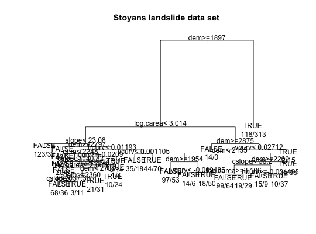
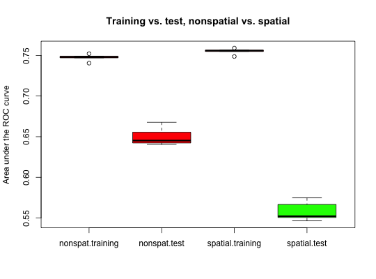

sperrorest is a flexible interface for multiple types of spatial and
non-spatial cross-validation and bootstrap error estimation and
permutation-based assessment of spatial variable importance.
sperrorest(formula, data, coords = c("x", "y"), model.fun, model.args = list(), pred.fun = NULL, pred.args = list(), smp.fun = partition.loo, smp.args = list(), train.fun = NULL, train.param = NULL, test.fun = NULL, test.param = NULL, err.fun = err.default, error.fold = TRUE, error.rep = TRUE, err.train = TRUE, imp.variables = NULL, imp.permutations = 1000, importance = !is.null(imp.variables), distance = FALSE, do.gc = 1, do.try = FALSE, progress = 1, benchmark = FALSE, notify = FALSE, ...)
model.
Only simple formulas without interactions or nonlinear terms should
be used, e.g. y~x1+x2+x3 but not y~x1*x2+log(x3).
Formulas involving interaction and nonlinear terms may possibly work
for error estimation but not for variable importance assessment,
but should be used with caution.data.frame with predictor and response variables.
Training and test samples will be drawn from this data set by train.fun
and test.fun, respectively.data that
contain the x and y coordinates of sample locations.glm
or rpart. The function must accept at least two arguments, the first
one being a formula and the second a data.frame with the learning sample.model.fun
(in addition to the formula and data argument,
which are provided by sperrorest)model. Must accept at least two arguments: the fitted
object and a data.frame newdata with data
on which to predict the outcome.pred.fun (in addition to the
fitted model object and the newdata argument,
which are provided by sperrorest)data. E.g., partition.kmeans() for
spatial cross-validation using spatial k-means clustering.est.funresample.uniform() or resample.strat.uniform()resample.funtrain.fun but for the test set.test.fundata and the model predictions delivered
by pred.fun. E.g., err.default() (the default).
See example and details below.TRUE if importance is
TRUE, otherwise FALSE): calculate error measures on each fold
within a resampling repetition.TRUE): calculate error measures
based on the pooled predictions of all folds within a resampling repetition.TRUE): calculate error measures on
the training set (in addition to the test set estimation).importance = TRUE)
Variables for which permutation-based variable importance assessment
is performed. If importance = TRUE and imp.variables is
NULL, all variables in formula will be used.importance = TRUE)
Number of permutations used for variable importance assessment.FALSE): if TRUE, calculate
mean nearest-neighbour distances from test samples to training samples using
add.distance.represampling()gc(); if <1, no garbage collection;
if >=1, run a gc() after each repetition;
if >=2, after each foldFALSE): if TRUE (untested!!),
use try() to robustify calls to model.fun and
err.fun; use with caution!progress = 1, repetition and fold progress is
shown in console (in Windows Rgui, disable 'Buffered output' in 'Misc' menu).
If progress = 2, only repetition information is shown.
Set to FALSE for no progress information.FALSE): if TRUE,
perform benchmarking and return sperrorestbenchmarks objectsperrorest() has finished.A list (object of class sperrorest) with (up to) six components:
(1) Optionally save fitted models, training and test samples in the results object; (2) Optionally save intermediate results in some file, and enable the function to continue an interrupted sperrorest call where it was interrupted. (3) Optionally have sperrorest dump the result of each repetition into a file, and to skip repetitions for which a file already exists.
Brenning, A. 2012. Spatial cross-validation and bootstrap for the assessment of prediction rules in remote sensing: the R package 'sperrorest'. 2012 IEEE International Geoscience and Remote Sensing Symposium (IGARSS), 23-27 July 2012, p. 5372-5375.
Brenning, A. 2005. Spatial prediction models for landslide hazards: review, comparison and evaluation. Natural Hazards and Earth System Sciences, 5(6): 853-862.
Brenning, A., S. Long & P. Fieguth. Forthcoming. Detecting rock glacier flow structures using Gabor filters and IKONOS imagery. Submitted to Remote Sensing of Environment.
Russ, G. & A. Brenning. 2010a. Data mining in precision agriculture: Management of spatial information. In 13th International Conference on Information Processing and Management of Uncertainty, IPMU 2010; Dortmund; 28 June - 2 July 2010. Lecture Notes in Computer Science, 6178 LNAI: 350-359.
Russ, G. & A. Brenning. 2010b. Spatial variable importance assessment for yield prediction in Precision Agriculture. In Advances in Intelligent Data Analysis IX, Proceedings, 9th International Symposium, IDA 2010, Tucson, AZ, USA, 19-21 May 2010. Lecture Notes in Computer Science, 6065 LNCS: 184-195.
data(ecuador) # Muenchow et al. (2012), see ?ecuador fo <- slides ~ dem + slope + hcurv + vcurv + log.carea + cslope # Example of a classification tree fitted to this data: library(rpart) ctrl <- rpart.control(cp = 0.005) # show the effects of overfitting fit <- rpart(fo, data = ecuador, control = ctrl) par(xpd = TRUE) plot(fit, compress = TRUE, main = 'Stoyans landslide data set')text(fit, use.n = TRUE)# Non-spatial 5-repeated 10-fold cross-validation: mypred.rpart <- function(object, newdata) predict(object, newdata)[, 2] nspres <- sperrorest(data = ecuador, formula = fo, model.fun = rpart, model.args = list(control = ctrl), pred.fun = mypred.rpart, smp.fun = partition.cv, smp.args = list(repetition = 1:5, nfold = 10))#> Tue Feb 7 14:16:07 2017 Repetition 1 #> Tue Feb 7 14:16:07 2017 - Fold 1 #> Tue Feb 7 14:16:08 2017 - Fold 2 #> Tue Feb 7 14:16:08 2017 - Fold 3 #> Tue Feb 7 14:16:08 2017 - Fold 4 #> Tue Feb 7 14:16:08 2017 - Fold 5 #> Tue Feb 7 14:16:08 2017 - Fold 6 #> Tue Feb 7 14:16:08 2017 - Fold 7 #> Tue Feb 7 14:16:08 2017 - Fold 8 #> Tue Feb 7 14:16:08 2017 - Fold 9 #> Tue Feb 7 14:16:09 2017 - Fold 10 #> Tue Feb 7 14:16:10 2017 Repetition 2 #> Tue Feb 7 14:16:10 2017 - Fold 1 #> Tue Feb 7 14:16:10 2017 - Fold 2 #> Tue Feb 7 14:16:10 2017 - Fold 3 #> Tue Feb 7 14:16:10 2017 - Fold 4 #> Tue Feb 7 14:16:10 2017 - Fold 5 #> Tue Feb 7 14:16:10 2017 - Fold 6 #> Tue Feb 7 14:16:10 2017 - Fold 7 #> Tue Feb 7 14:16:10 2017 - Fold 8 #> Tue Feb 7 14:16:10 2017 - Fold 9 #> Tue Feb 7 14:16:10 2017 - Fold 10 #> Tue Feb 7 14:16:12 2017 Repetition 3 #> Tue Feb 7 14:16:12 2017 - Fold 1 #> Tue Feb 7 14:16:12 2017 - Fold 2 #> Tue Feb 7 14:16:12 2017 - Fold 3 #> Tue Feb 7 14:16:12 2017 - Fold 4 #> Tue Feb 7 14:16:12 2017 - Fold 5 #> Tue Feb 7 14:16:12 2017 - Fold 6 #> Tue Feb 7 14:16:12 2017 - Fold 7 #> Tue Feb 7 14:16:13 2017 - Fold 8 #> Tue Feb 7 14:16:13 2017 - Fold 9 #> Tue Feb 7 14:16:13 2017 - Fold 10 #> Tue Feb 7 14:16:14 2017 Repetition 4 #> Tue Feb 7 14:16:14 2017 - Fold 1 #> Tue Feb 7 14:16:14 2017 - Fold 2 #> Tue Feb 7 14:16:14 2017 - Fold 3 #> Tue Feb 7 14:16:14 2017 - Fold 4 #> Tue Feb 7 14:16:14 2017 - Fold 5 #> Tue Feb 7 14:16:14 2017 - Fold 6 #> Tue Feb 7 14:16:14 2017 - Fold 7 #> Tue Feb 7 14:16:14 2017 - Fold 8 #> Tue Feb 7 14:16:14 2017 - Fold 9 #> Tue Feb 7 14:16:14 2017 - Fold 10 #> Tue Feb 7 14:16:16 2017 Repetition 5 #> Tue Feb 7 14:16:16 2017 - Fold 1 #> Tue Feb 7 14:16:16 2017 - Fold 2 #> Tue Feb 7 14:16:16 2017 - Fold 3 #> Tue Feb 7 14:16:16 2017 - Fold 4 #> Tue Feb 7 14:16:16 2017 - Fold 5 #> Tue Feb 7 14:16:16 2017 - Fold 6 #> Tue Feb 7 14:16:16 2017 - Fold 7 #> Tue Feb 7 14:16:16 2017 - Fold 8 #> Tue Feb 7 14:16:16 2017 - Fold 9 #> Tue Feb 7 14:16:16 2017 - Fold 10 #> Tue Feb 7 14:16:17 2017 Done.summary(nspres$error.rep)#> mean sd median IQR #> train.auroc 7.472716e-01 0.004277245 7.479835e-01 0.0019938333 #> train.error 2.945667e-01 0.004479962 2.945000e-01 0.0002222222 #> train.accuracy 7.054333e-01 0.004479962 7.055000e-01 0.0002222222 #> train.sensitivity 6.829778e-01 0.017383901 6.763333e-01 0.0216666667 #> train.specificity 7.278889e-01 0.010551754 7.332222e-01 0.0172222222 #> train.fpr70 2.997778e-01 0.015919745 2.993333e-01 0.0092222222 #> train.fpr80 4.687556e-01 0.024571940 4.701111e-01 0.0236666667 #> train.fpr90 6.647556e-01 0.012259891 6.592222e-01 0.0010000000 #> train.tpr80 5.589111e-01 0.007400534 5.566667e-01 0.0132222222 #> train.tpr90 3.252889e-01 0.012120180 3.287778e-01 0.0184444444 #> train.tpr95 1.846444e-01 0.009841773 1.838889e-01 0.0135555556 #> train.events 9.000000e+03 0.000000000 9.000000e+03 0.0000000000 #> train.count 1.800000e+04 0.000000000 1.800000e+04 0.0000000000 #> test.auroc 6.502489e-01 0.011390730 6.451865e-01 0.0131995000 #> test.error 3.762000e-01 0.015385058 3.825000e-01 0.0215000000 #> test.accuracy 6.238000e-01 0.015385058 6.175000e-01 0.0215000000 #> test.sensitivity 6.046000e-01 0.018447222 6.050000e-01 0.0170000000 #> test.specificity 6.430000e-01 0.028956864 6.370000e-01 0.0220000000 #> test.fpr70 5.000000e-01 0.037188708 5.120000e-01 0.0540000000 #> test.fpr80 6.400000e-01 0.023075962 6.360000e-01 0.0280000000 #> test.fpr90 7.964000e-01 0.021547622 7.840000e-01 0.0320000000 #> test.tpr80 3.928000e-01 0.025449951 3.860000e-01 0.0170000000 #> test.tpr90 1.838000e-01 0.021300235 1.830000e-01 0.0190000000 #> test.tpr95 7.480000e-02 0.016161683 7.100000e-02 0.0120000000 #> test.events 1.000000e+03 0.000000000 1.000000e+03 0.0000000000 #> test.count 2.000000e+03 0.000000000 2.000000e+03 0.0000000000summary(nspres$error.fold)#> mean sd median IQR #> train.auroc 0.74221460 0.01915497 0.74443909 0.02169907 #> train.error 0.29456667 0.01351971 0.29416667 0.01736111 #> train.accuracy 0.70543333 0.01351971 0.70583333 0.01736111 #> train.sensitivity 0.68295508 0.05308884 0.69243140 0.08162716 #> train.specificity 0.72787384 0.04092559 0.73543910 0.05820976 #> train.fpr70 0.43069108 0.20480576 0.33481646 0.19810242 #> train.fpr80 0.58963789 0.15094091 0.51911081 0.20622525 #> train.fpr90 0.74728107 0.08381107 0.74857106 0.15411993 #> train.tpr80 0.50924991 0.07073053 0.51804049 0.08080711 #> train.tpr90 0.14435308 0.09725691 0.11466498 0.08903157 #> train.tpr95 0.10679527 0.05150344 0.10475532 0.05833854 #> train.events 900.00000000 6.14451805 900.00000000 8.00000000 #> train.count 1800.00000000 0.00000000 1800.00000000 0.00000000 #> test.auroc 0.64900506 0.03458457 0.64739445 0.04287726 #> test.error 0.37620000 0.02926933 0.37750000 0.04000000 #> test.accuracy 0.62380000 0.02926933 0.62250000 0.04000000 #> test.sensitivity 0.60465951 0.07057920 0.59807692 0.07664996 #> test.specificity 0.64266408 0.06824941 0.65240275 0.09187511 #> test.fpr70 0.62369998 0.16127893 0.57297352 0.23727491 #> test.fpr80 0.72436521 0.12099176 0.71776912 0.19888114 #> test.fpr90 0.82725454 0.07197629 0.82126845 0.12519062 #> test.tpr80 0.35444742 0.12882387 0.39482831 0.08878706 #> test.tpr90 0.10210100 0.08544656 0.08338941 0.06531795 #> test.tpr95 0.05334693 0.04008048 0.05181486 0.05128959 #> test.events 100.00000000 6.14451805 100.00000000 8.00000000 #> test.count 200.00000000 0.00000000 200.00000000 0.00000000 #> distance -1.00000000 0.00000000 -1.00000000 0.00000000summary(nspres$represampling)#> $`1` #> n.train n.test #> 1 1800 200 #> 2 1800 200 #> 3 1800 200 #> 4 1800 200 #> 5 1800 200 #> 6 1800 200 #> 7 1800 200 #> 8 1800 200 #> 9 1800 200 #> 10 1800 200 #> #> $`2` #> n.train n.test #> 1 1800 200 #> 2 1800 200 #> 3 1800 200 #> 4 1800 200 #> 5 1800 200 #> 6 1800 200 #> 7 1800 200 #> 8 1800 200 #> 9 1800 200 #> 10 1800 200 #> #> $`3` #> n.train n.test #> 1 1800 200 #> 2 1800 200 #> 3 1800 200 #> 4 1800 200 #> 5 1800 200 #> 6 1800 200 #> 7 1800 200 #> 8 1800 200 #> 9 1800 200 #> 10 1800 200 #> #> $`4` #> n.train n.test #> 1 1800 200 #> 2 1800 200 #> 3 1800 200 #> 4 1800 200 #> 5 1800 200 #> 6 1800 200 #> 7 1800 200 #> 8 1800 200 #> 9 1800 200 #> 10 1800 200 #> #> $`5` #> n.train n.test #> 1 1800 200 #> 2 1800 200 #> 3 1800 200 #> 4 1800 200 #> 5 1800 200 #> 6 1800 200 #> 7 1800 200 #> 8 1800 200 #> 9 1800 200 #> 10 1800 200 #># plot(nspres$represampling, ecuador) # Spatial 5-repeated 10-fold spatial cross-validation: spres <- sperrorest(data = ecuador, formula = fo, model.fun = rpart, model.args = list(control = ctrl), pred.fun = mypred.rpart, smp.fun = partition.kmeans, smp.args = list(repetition = 1:5, nfold = 10))#> Tue Feb 7 14:16:17 2017 Repetition 1 #> Tue Feb 7 14:16:17 2017 - Fold 1 #> Tue Feb 7 14:16:17 2017 - Fold 2 #> Tue Feb 7 14:16:17 2017 - Fold 3 #> Tue Feb 7 14:16:17 2017 - Fold 4 #> Tue Feb 7 14:16:18 2017 - Fold 5 #> Tue Feb 7 14:16:18 2017 - Fold 6 #> Tue Feb 7 14:16:18 2017 - Fold 7 #> Tue Feb 7 14:16:18 2017 - Fold 8 #> Tue Feb 7 14:16:18 2017 - Fold 9 #> Tue Feb 7 14:16:18 2017 - Fold 10 #> Tue Feb 7 14:16:19 2017 Repetition 2 #> Tue Feb 7 14:16:19 2017 - Fold 1 #> Tue Feb 7 14:16:19 2017 - Fold 2 #> Tue Feb 7 14:16:19 2017 - Fold 3 #> Tue Feb 7 14:16:19 2017 - Fold 4 #> Tue Feb 7 14:16:19 2017 - Fold 5 #> Tue Feb 7 14:16:19 2017 - Fold 6 #> Tue Feb 7 14:16:19 2017 - Fold 7 #> Tue Feb 7 14:16:20 2017 - Fold 8 #> Tue Feb 7 14:16:20 2017 - Fold 9 #> Tue Feb 7 14:16:20 2017 - Fold 10 #> Tue Feb 7 14:16:21 2017 Repetition 3 #> Tue Feb 7 14:16:21 2017 - Fold 1 #> Tue Feb 7 14:16:21 2017 - Fold 2 #> Tue Feb 7 14:16:21 2017 - Fold 3 #> Tue Feb 7 14:16:21 2017 - Fold 4 #> Tue Feb 7 14:16:21 2017 - Fold 5 #> Tue Feb 7 14:16:21 2017 - Fold 6 #> Tue Feb 7 14:16:21 2017 - Fold 7 #> Tue Feb 7 14:16:21 2017 - Fold 8 #> Tue Feb 7 14:16:21 2017 - Fold 9 #> Tue Feb 7 14:16:21 2017 - Fold 10 #> Tue Feb 7 14:16:22 2017 Repetition 4 #> Tue Feb 7 14:16:22 2017 - Fold 1 #> Tue Feb 7 14:16:22 2017 - Fold 2 #> Tue Feb 7 14:16:22 2017 - Fold 3 #> Tue Feb 7 14:16:23 2017 - Fold 4 #> Tue Feb 7 14:16:23 2017 - Fold 5 #> Tue Feb 7 14:16:23 2017 - Fold 6 #> Tue Feb 7 14:16:23 2017 - Fold 7 #> Tue Feb 7 14:16:23 2017 - Fold 8 #> Tue Feb 7 14:16:23 2017 - Fold 9 #> Tue Feb 7 14:16:23 2017 - Fold 10 #> Tue Feb 7 14:16:24 2017 Repetition 5 #> Tue Feb 7 14:16:24 2017 - Fold 1 #> Tue Feb 7 14:16:24 2017 - Fold 2 #> Tue Feb 7 14:16:24 2017 - Fold 3 #> Tue Feb 7 14:16:24 2017 - Fold 4 #> Tue Feb 7 14:16:24 2017 - Fold 5 #> Tue Feb 7 14:16:24 2017 - Fold 6 #> Tue Feb 7 14:16:24 2017 - Fold 7 #> Tue Feb 7 14:16:24 2017 - Fold 8 #> Tue Feb 7 14:16:25 2017 - Fold 9 #> Tue Feb 7 14:16:25 2017 - Fold 10 #> Tue Feb 7 14:16:26 2017 Done.summary(spres$error.rep)#> mean sd median IQR #> train.auroc 7.549125e-01 0.003835574 7.557232e-01 0.001652568 #> train.error 2.897889e-01 0.003181593 2.892778e-01 0.001833333 #> train.accuracy 7.102111e-01 0.003181593 7.107222e-01 0.001833333 #> train.sensitivity 6.983778e-01 0.011791816 7.062222e-01 0.014333333 #> train.specificity 7.220444e-01 0.006640969 7.217778e-01 0.010444444 #> train.fpr70 2.881111e-01 0.011595284 2.852222e-01 0.019000000 #> train.fpr80 4.543111e-01 0.019378523 4.548889e-01 0.033444444 #> train.fpr90 6.493333e-01 0.016398585 6.475556e-01 0.026444444 #> train.tpr80 5.529111e-01 0.005408841 5.547778e-01 0.007666667 #> train.tpr90 3.529556e-01 0.006965789 3.505556e-01 0.004666667 #> train.tpr95 1.064889e-01 0.020277945 1.005556e-01 0.008444444 #> train.events 9.000000e+03 0.000000000 9.000000e+03 0.000000000 #> train.count 1.800000e+04 0.000000000 1.800000e+04 0.000000000 #> test.auroc 5.581284e-01 0.011996500 5.521745e-01 0.015978500 #> test.error 4.515000e-01 0.018910976 4.570000e-01 0.035000000 #> test.accuracy 5.485000e-01 0.018910976 5.430000e-01 0.035000000 #> test.sensitivity 4.686000e-01 0.034616470 4.670000e-01 0.038000000 #> test.specificity 6.284000e-01 0.037433942 6.190000e-01 0.023000000 #> test.fpr70 6.528000e-01 0.026118959 6.520000e-01 0.012000000 #> test.fpr80 7.476000e-01 0.016164777 7.570000e-01 0.029000000 #> test.fpr90 8.676000e-01 0.015868207 8.650000e-01 0.016000000 #> test.tpr80 2.754000e-01 0.052180456 2.930000e-01 0.074000000 #> test.tpr90 1.234000e-01 0.049540892 1.250000e-01 0.096000000 #> test.tpr95 4.120000e-02 0.028717590 4.500000e-02 0.045000000 #> test.events 1.000000e+03 0.000000000 1.000000e+03 0.000000000 #> test.count 2.000000e+03 0.000000000 2.000000e+03 0.000000000summary(spres$represampling)#> $`1` #> n.train n.test #> 1 1811 189 #> 2 1825 175 #> 3 1787 213 #> 4 1853 147 #> 5 1747 253 #> 6 1836 164 #> 7 1806 194 #> 8 1769 231 #> 9 1790 210 #> 10 1776 224 #> #> $`2` #> n.train n.test #> 1 1744 256 #> 2 1755 245 #> 3 1743 257 #> 4 1800 200 #> 5 1835 165 #> 6 1815 185 #> 7 1799 201 #> 8 1847 153 #> 9 1824 176 #> 10 1838 162 #> #> $`3` #> n.train n.test #> 1 1744 256 #> 2 1820 180 #> 3 1763 237 #> 4 1778 222 #> 5 1841 159 #> 6 1855 145 #> 7 1771 229 #> 8 1770 230 #> 9 1794 206 #> 10 1864 136 #> #> $`4` #> n.train n.test #> 1 1744 256 #> 2 1816 184 #> 3 1762 238 #> 4 1795 205 #> 5 1835 165 #> 6 1833 167 #> 7 1770 230 #> 8 1824 176 #> 9 1812 188 #> 10 1809 191 #> #> $`5` #> n.train n.test #> 1 1784 216 #> 2 1791 209 #> 3 1790 210 #> 4 1845 155 #> 5 1826 174 #> 6 1788 212 #> 7 1836 164 #> 8 1860 140 #> 9 1714 286 #> 10 1766 234 #># plot(spres$represampling, ecuador) smry <- data.frame( nonspat.training = unlist(summary(nspres$error.rep, level = 1)$train.auroc), nonspat.test = unlist(summary(nspres$error.rep, level = 1)$test.auroc), spatial.training = unlist(summary(spres$error.rep, level = 1)$train.auroc), spatial.test = unlist(summary(spres$error.rep, level = 1)$test.auroc)) boxplot(smry, col = c('red','red','red','green'), main = 'Training vs. test, nonspatial vs. spatial', ylab = 'Area under the ROC curve')